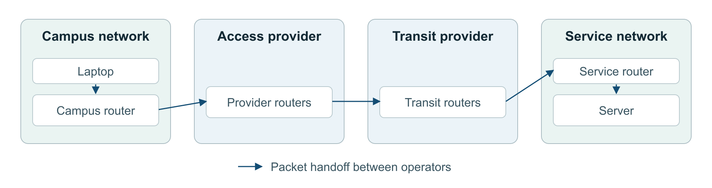
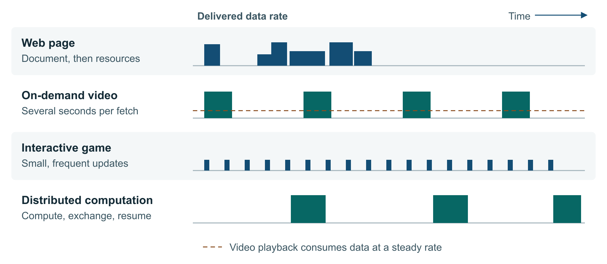
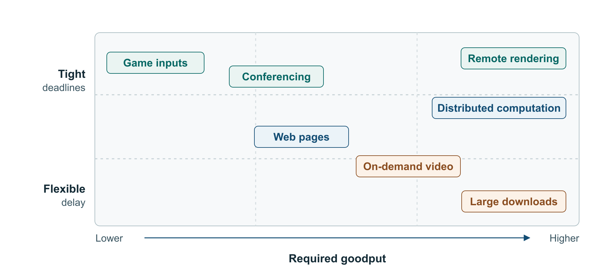
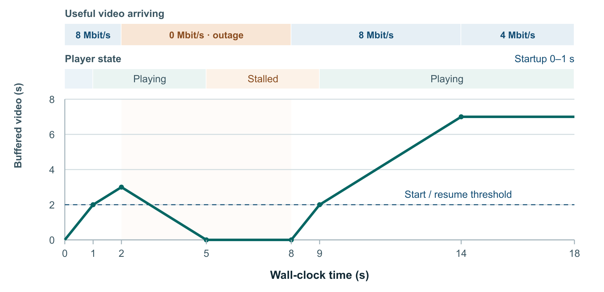

1. What Should a Network Do?
Suppose you're sitting in the campus library and a friend sends you a video of a cat trying to get into a box. The cat is quite a bit larger than the box, which I suppose is why your friend sent you the video. Somebody on the other side of the planet recorded this, and a minute later here you are, in a position to have an informed opinion about whether the cat will fit. What did your friend have to know about the network at your university to arrange that? Pretty much nothing. That's a fairly remarkable thing to be able to take for granted.
If we go by geographic extent, the Internet has a reasonable claim to being the largest machine people have ever built. Even calling it a machine is a little odd, though. The university owns the Wi-Fi equipment in the library. It hands your request to a provider whose equipment the university doesn't own, and that provider may hand it to another organization before the request reaches the service hosting the video. The Internet is the worldwide system you get by connecting all these independently operated networks. The people who first connected them had different uses in mind, including email and moving files between computers. They didn't have to anticipate the cat. In one sense, this is straightforward. Everything is bits. Bits that represent the cat's ears, they tell a game server you've opened a door, and constitute the text in this book. Why, then, would anyone building a network care which applications people want to run on it? Hold on to that question.

Figure 1.1. One possible journey from the library to the recording. Each boundary marks a handoff between organizations. Two networks that connect directly can make the journey with fewer handoffs.
Now suppose the little wheel has been spinning for a few seconds and we're still waiting to see the cat. Where would you go to find out what's taking so long? If you work for the campus, you can look at the equipment you own and find out whether requests are piling up on their way out of the library. If you work for the video service, you can check when the request reached you and when you started sending footage back. If you're the person in the library, you know exactly how long you've been staring at a wheel, a measurement that neither of the other two people gets for free. One of the challenges in building the internet is that nobody gets to observe it in its entirety
That's much of what we'll learn to do in this book. We'll build up a network from pieces small enough that we can reason about them, figure out how to get data to a computer we've never spoken to before, and decide what the computers ought to do when some of the data goes missing or everybody wants the same link at once. You'll get to invent quite a few of the rules yourself. Often the interesting part comes just after you've found a rule you like, when somebody asks, “Okay, what if both computers do that at the same time?” For a small network we can work out the answer on paper. Eventually we'll build systems too large or too expensive to observe in their entirety, even when we own them, and then we'll have to work out which measurement would actually settle the question.
Here's a first taste of the kind of decision we'll make. Imagine that you help run the campus network and have enough money this year to buy one new connection to the outside world. Students have brought you two perfectly reasonable complaints. The students who play an online game in the evenings say that their characters are sluggish, while the people who maintain the computer labs say that downloading a software update takes forever. One provider offers you Link A, which carries a billion bits per second, although any particular bit takes half a second to get across. Another offers Link B, which carries only ten million bits per second, but gets a bit to the other end in ten milliseconds. Both providers can make a good case that theirs is the faster link. Which one would you like the campus to buy?
What is someone waiting for when they say the network feels slow?
Let's spend a moment with one of the students who plays the game, because it isn't immediately obvious what buying a campus connection has to do with the feeling of steering a character around a castle. Imagine a game in which a server keeps track of where everybody is, so that when two players reach the same door, their computers can agree about who got there first. When our student tries to go through the door, the game on her laptop sends a small message describing her move. The server needs to hear about that move before it can settle what happened. Eventually, of course, the student would like to see the result on her screen. For the campus purchase, we can start with one manageable piece of that story: how long does her message spend getting across the particular link we have a chance to change?
Suppose the message, once the game has packaged it up, occupies one kilobyte, or 8,000 bits. We'll give it an empty link, let every bit get through, and keep the rest of the journey the same under either purchase. Now consider Link B. The sender can begin putting the message onto the wire straight away, but it has to put the bits on in succession. At ten million bits per second, it takes 8,000 divided by ten million seconds, or 0.8 milliseconds, to put the whole message on the wire. During those 0.8 milliseconds, something rather helpful has been happening: the beginning of the message has already been traveling toward the other end.
If you could stand at the receiving end with a clock that started when the sender began, you would see the beginning of the message arrive at 10 milliseconds, the time the signal needs to cross the link. You would then spend another 0.8 milliseconds receiving the rest of it. You can get the same answer by standing at the sending end in your imagination and following the very last bit. By the time the sender has put that bit on the wire, 0.8 milliseconds have gone by, and the end of the message still has its 10-millisecond journey ahead of it. Either way, the complete message has crossed the link after 10.8 milliseconds. It can now continue on its way to the game server.
Those two intervals turn up so often that it pays to give them names. The time the signal spends traveling from one end to the other is the propagation delay. The time the sender spends putting all the bits onto the link is the transmission delay, also called serialization delay. Once you've pictured the last bit making the trip, you already understand the equation. If the message contains S bits and the link can send C bits per second, it takes S/C seconds to put the message onto the wire. Allow another d seconds for propagation, and you have the time at which the far end has received the whole thing.
Time until the last bit arrives = S/C + d.
What makes the campus purchase interesting is that an update for the lab computers has a very different size, and the installer may need the whole file before it can verify it and get to work. Here's what happens if we run our calculation again, first for the student's move and then for a ten-megabyte update. We'll use decimal units throughout, so a kilobyte contains 1,000 bytes and a megabyte contains one million.
| What needs to cross the link? | Link A · 1 Gbit/s, 500 ms | Link B · 10 Mbit/s, 10 ms |
|---|---|---|
| A 1 kB message about a move | 500.008 ms | 10.8 ms |
| A 10 MB software update | 580 ms | 8.010 s |
So which provider gets to call its link fast? If you're waiting for the game message, Link B is finished in 10.8 milliseconds, by which time on Link A even the first bit still has most of its journey ahead of it. If you're waiting for the update, Link A puts all ten megabytes onto the wire in 80 milliseconds. It can afford to spend another half second getting the last bit across, because Link B takes eight seconds just to send the file. You can even find the message size at which the two salespeople are entitled to a draw. Set the two completion times equal, using the same size S on both sides, and you'll get about 619 kB. That number belongs to these two links and to our assumption that all the data is ready to go. Let's see how much trouble we can cause by changing that assumption.
There are already good reasons to revisit our little model. The student wants to see the door open, which may require a reply from the server, some computation, and time for the laptop to draw the next frame. The lab computer may first have to ask whether an update is available. Equipment along the way spends time examining data (processing delay), and data can spend time waiting for a busy outgoing link (queueing delay). So when someone reports a measurement of latency, ask what started the clock and what stopped it. Sending a message to a server and getting a reply gives you a round-trip time, or RTT. Starting the clock when the student's finger moves and stopping it when the screen changes would tell you something else she'd be delighted to know.
There's a similar distinction hiding in the provider's advertised rate. The capacity of a link tells you how many bits it can carry per second, while throughput tells you how many actually arrived per second over the interval you measured. A long download has to pass through every link on its path, so even on an otherwise quiet network its sustained rate is limited by the slowest of those links. Other people's transfers can reduce your share further. And if you're the person writing the video player, you'll want to know how much of what arrived was usable video, once you've set aside the information needed to carry it and any bytes that were sent twice. That last rate is called goodput. It's the one that tells you whether you have enough new footage to keep the picture moving.
Something to try. Suppose the game sends a hundred of those little 1 kB messages. If all hundred are ready together, the sender can put them on the wire one after another while the earlier ones are still traveling. When will the last one reach the far end on each link? Now imagine a game in which the next move depends on the answer to the previous one, so the sender must wait for a tiny reply each time. Assume the reply takes the same time to travel back as a bit took to travel out. Before you reach for a calculator, which part of the wait do you expect the players to notice this time?
Why is the campus sharing a wire in the first place?
There's a more basic question we've managed to duck while shopping for a campus link. Why are two people who happen to attend the same university sharing anything in the first place? We could give every pair of computers a private wire, in which case the game could hardly be held up by somebody downloading a cat video. Let's see what we've volunteered to build. For a thousand computers, the first needs 999 connections, the next needs another 998 beyond the wire we've already counted, and the total comes to 499,500. At this point someone walks in with a laptop. Welcome to campus! We'll have you connected as soon as we've run another thousand wires.
What makes a single campus connection so useful is that a computer nearby can take delivery of some data and pass it farther along. The sender divides its data into pieces called packets, each of which carries an address saying where it needs to go. A machine called a router reads that address and chooses an outgoing link for the packet. In Figure 1.1 the campus router can hand a packet to the provider, whose router can hand it to the next network, until one of the routers can deliver it to its destination. The sequence of links a packet follows is its path. When a new laptop joins the library Wi-Fi, it immediately has a way to reach all sorts of places for which nobody in the library has ever had to install a dedicated wire.
Sharing gives us a new design question almost as soon as it solves the wiring problem. Suppose the library and a residence hall have separate links into the campus router, and each sends it a packet that needs the same outgoing link. Both packets can arrive together, but the router can only put their bits onto that link at the rate the provider sold us. It can keep a waiting packet in memory, in a queue, until the link is free. Most of the time this is a happy arrangement, since the library can use the whole link when the residence hall is quiet and return the favor later. When their combined traffic arrives faster than the link can carry it away, though, the outgoing link becomes a bottleneck. A packet can spend its entire useful lifetime waiting in the queue, and if the burst lasts long enough, the router can run out of room even to hold it.
Imagine that you run that router and someone asks, quite reasonably, “If I hand you this packet, can you promise it will be there in eight milliseconds?” In the little experiment below, you know how many packets are already waiting, how quickly the link sends them, and how long they take to travel. You could use that knowledge to turn a packet away as soon as you see that you can't meet its deadline, leaving its sender a chance to try something else. You could also offer to take any packet for which there's room and send it as soon as its turn comes, leaving the receiver to decide whether a late packet is still useful. A student downloading a file might welcome such a packet. A game that has already moved on to the next turn might have little use for it.
Figure 1.2. Two senders each offer four packets at once, with A first in the tie, an eight-millisecond deadline, and room for seven packets. Follow B's third packet. The deadline rule declines it while the sender can still do something else. Best effort takes it, occupies space and transmission time carrying it, and delivers it late. What happens to B's fourth packet under each rule?
Try easing the deadline while leaving the traffic alone, and then increasing the traffic while leaving the deadline alone. The distinction is easiest to see if you keep an eye on a particular packet and ask what information the operator had at the moment it arrived. Both rules in this experiment serve admitted packets in order, and we've given the operator the luxury of a single working link whose future rate is known. A campus promising a deadline all the way to another university would have to arrange for the packet to receive suitable service at every intervening network, and somebody would have to explain what the promise covers if a link fails halfway there.
The common service offered by the public Internet is best-effort packet delivery. Networks undertake to forward packets toward their destinations, while the possibility of loss, reordering, or delay remains something the computers at the ends must handle. Those computers have a substantial advantage when it comes to deciding what to do next: they know what the data was for. The lab installer can ask for missing bytes again and wait until it has a verifiably complete update. A call can skip a missing bit of speech once its moment in the conversation has passed. Happily, the same campus router can carry both.
Would you buy enough capacity to carry absolutely everything people might send on the busiest evening of the year? If you're the user whose game has frozen, that sounds like an excellent use of somebody's money. If you're the network operator, you get the bill for that capacity on Sunday morning as well, when almost everybody is asleep. And if you're the application developer, you have another option altogether. Perhaps you can change what the game sends, or what it does while it waits, and get a perfectly good game out of the connection the campus already has. This is why it's worth asking who's doing the designing and which part of the system they can change.
What would you measure while the campus was busy?
If we were going to spend real money on the campus connection, a pleasant next step would be to sit down with the people who use it and find out what their programs actually do. Figure 1.3 sketches what we'd see if we counted the data delivered to each of four applications over successive slices of time. Each has periods of activity and periods of relative quiet, yet the quiet stretches have quite different meanings. A video player might already have everything it needs for the next few seconds, whereas a browser might be quite unable to proceed until a reply comes back.

Figure 1.3. Each row has its own rate scale. As you read from left to right, consider what the application can get done during a gap between deliveries.
Take the web page on which your friend found the cat video. A browser might first fetch a small document and discover, only after reading it, which image belongs at the top of the page and which script makes the play button work. If one discovery has to wait for the last, each trip to the server can add to the time you spend looking at a partly assembled page. A bigger link certainly helps when there is a large image to carry. If you were arranging the page yourself, you might also see an opportunity to let the browser discover that play button a little sooner.
Once you hit play, on-demand video gives us a nice puzzle. How can watching videos account for so much traffic when you might spend considerably more time reading than you do watching cats? Well, how many bits did the network send while you were thinking about the last paragraph? If the whole page was 500 kB and your browser already has it, you can contemplate it for the rest of the afternoon at no additional expense to the network. Ten seconds of video encoded at 4 Mbit/s is already 40 megabits, or 5 MB, ten times the size of that page. On the other hand, if those ten seconds are already on your laptop, the network could disappear for the next few seconds and the cat would carry on trying to get into the box. The network has a deadline here, but it's a deadline the player can do something about.
What if you and your friend are on a video call, discussing the cat? We just found a fairly effective way to keep video playing through an interruption, so why don't we give each person ten seconds of audio in reserve? Well, try having a conversation in which you ask somebody a question and your question spends ten seconds sitting on their laptop before they hear it. There's a perfectly sensible idea hiding in there. Packets carrying speech can take slightly different amounts of time to arrive, a variation called jitter, and a small reserve lets the receiver play the sounds at an even pace. Every millisecond we add to that reserve, though, is a millisecond the other person has to wait before they can hear the question. The same ten seconds that were so handy for a recorded video would make for a very peculiar conversation.
Here's a slightly meaner application to design for. In cloud gaming or remotely rendered augmented reality, you can have a powerful computer somewhere else draw the scene, which is attractive if the alternative is to strap a powerful computer and its battery to your head. But when you turn your head, word of that movement has to reach the computer, the computer has to draw the new view, and a whole image has to come back and be displayed in time to follow the movement. Suppose we draw just thirty frames per second and announce, with some pride, that 99 percent of our frames meet their deadline. Is that good? At thirty frames a second, one percent works out to a late frame roughly every three and a third seconds on average. Put the headset on the person who wrote the press release and see whether they'd like to revise it. We'd also want to know whether those misses are spread out or whether several arrive in a row.
Finally, consider distributed computation, where the thing doing the waiting may be an expensive room full of computers. Workers training a model can spend some time computing independently and then need to exchange results before any of them can begin the next step. One worker whose transfer finishes late can leave all its companions waiting. A measurement of the duration of the whole step would help the person paying for those computers decide whether a faster link is worth buying.

Figure 1.4. A rough map of application requirements. The game sending short moves and the game receiving rendered images both care about prompt feedback, but they ask the network to carry very different amounts of data.
Experiences like the jerky headset and the roomful of waiting computers give us a reason to look at tail latency, the unusually slow end of the collection of times we measured. Suppose we time a hundred requests, of which 98 finish in ten milliseconds apiece and two take an entire second. We could truthfully report a mean of 29.8 milliseconds, which sounds quite pleasant until you happen to be the person making one of those two requests. Another way to describe the measurements is to line them up from quickest to slowest and look at the 99th one. By this nearest-rank definition, the 99th percentile is one second. Both numbers belong in our notebook, along with what we timed and how busy the network was when we timed it.
It's worth giving reliability the same care. If a missing packet is recovered a second later, the lab may end up with a completely reliable copy of the update, while the person on the call has already had to say, “Would you mind repeating that?” Before assigning a percentage to success, it helps to finish the sentence “We'll count this as a success if …” from the point of view of the person who'll actually use the result.
How long would you wait for a cat video that never stalls?
Suppose we've been put in charge of the video player and given a very specific instruction: once the cat starts moving, under no circumstances should the picture freeze. I have an implementation ready. We'll download the whole video and then show the play button. It satisfies the instruction beautifully, and if the video runs for half an hour on a connection that can barely keep up, our viewer will have had ample time to find another website. What we really wanted was to start fairly soon and keep playing once we've started. Now we have a design problem worth spending some time on.
It'll help to measure what we've saved up in seconds of cat, an entirely respectable unit for the purposes of this calculation. The playhead is the viewer's current position in the recording, and the forward playback buffer is the footage immediately ahead of that position that's ready to play. If two seconds of footage arrive in one second of wall-clock time, and the cat is on screen for that whole second, we add two seconds to the reserve and spend one. During an outage we can keep spending a second per second and nobody watching need know anything happened, right up to the moment the reserve hits zero.
For the experiment in Figure 1.5, let's give the player a 4 Mbit/s recording and a particularly obliging network whose next eighteen seconds we can foretell. For the first two seconds it will deliver 8 Mbit/s of usable video, twice the rate at which the recording plays. Then we'll lose delivery altogether until time 8 s, get 8 Mbit/s again until time 14 s, and receive exactly the playback rate for the remaining four seconds. We'll assume that footage arrives in order, that arriving data is immediately usable, and that we have plenty of room to keep it. Our first player will begin as soon as it has two seconds in reserve, and if it ever runs dry, it will wait to build up that same reserve before resuming. When would you expect the viewer to see the first frame, and how far into the outage do you think they'll get before the picture freezes?

Figure 1.5. Follow the clock on the wall and the position in the video. Between wall times 5 s and 9 s the viewer ages four seconds and the cat hasn't moved an inch.
With the starting settings, the first second of delivery buys two seconds of footage, so we begin playing at time 1 s. By time 2 s we've received four seconds of video and shown one, which leaves three seconds in hand just as the network goes quiet. That carries us to time 5 s. Delivery returns at time 8 s, and it takes one more second to collect the reserve our rule calls for, so the picture starts moving again at time 9 s. Over the whole eighteen seconds, the player received 80 megabits, averaging about 4.44 Mbit/s for a video that needs only 4. The viewer who sat through the four-second pause could tell us precisely what that average left out: the extra footage turned up after they needed it.
Predict, simulate, and explain. Perhaps you'd like to give the player a more generous reserve, say four seconds at startup and again after a stall. Before changing the controls, see whether you think the viewer will spend less time looking at a frozen picture. With four-second thresholds the picture starts at time 2 s, freezes at 6 s, and resumes at 10 s. Our prudence bought us an extra second during the outage, and our determination to be equally prudent before restarting cost us an extra second afterward. There's another change worth trying. Restore the two-second thresholds and offer the viewer a lower-quality version encoded at 2 Mbit/s. Every megabit that arrives now buys twice as much viewing time. Playback begins at time 0.5 s and makes it all the way through the outage with half a second of footage to spare.
You can work through any setting on paper by jumping from one interesting event to the next: a change in the arrival rate, the moment a reserve becomes large enough to start, or the moment it runs out. At each event, jot down the wall time, the position in the video, and how much playable footage remains. Then try a shorter outage or one that begins a little later. If you were offering the service to a friend, which combination of picture quality, startup wait, and interruptions would you choose, and what would you want to know about their connection before choosing for them?
Network detective: Why did the player download something I'd already watched?
Suppose the cat actually gets into the box. You have some questions about the geometry of what you've just seen, so you drag the playhead back ten seconds, at which point the little wheel comes back. Hang on. You just watched those ten seconds. Where did they go? A student raised this question about video players in class, and somebody else had noticed a detail that made it more interesting. Jumping back immediately could work, while pausing for a while and then jumping back could cause the player to reload. That's an observation we might be able to do something with.
We'll call this kind of exercise network detective. We get to start with a symptom that somebody actually noticed, offer as many explanations as we like, and then do the harder work of finding an observation on which two explanations disagree. Take the idea that video takes up too much memory. How much is too much? Half an hour of compressed video at 4 Mbit/s comes to about 900 MB. Ten seconds comes to about 5 MB. You might very reasonably prefer to spend your last 5 MB on the next ten seconds, which the viewer is quite likely to watch, rather than on the previous ten, which they'll only want if the cat does something exceptional. But suppose there's plenty of memory free. Why would the player throw those seconds away then? Does the player even know how much memory is available? A backward cache keeps footage around for replay, and we've found three different questions to ask about how big it ought to be before we've looked at a line of the player's code.
Imagine that we can ask the player which stretches of the recording are ready to play, and ask the browser which pieces of video it requested and how many bytes actually crossed the network. The following are invented observations for three runs using the same browser, recording, and quality setting. In each run we're sitting at the seventy-second mark and want to replay the bit beginning at sixty seconds. As you read the table, see how far you can get toward an explanation using just those two witnesses.
| What the viewer did | Range ready to play just before the seek | Browser request for the target | Bytes transferred for that request |
|---|---|---|---|
| Went back immediately | 56–84 s | None covering 60 s | 0 |
| Paused for 30 seconds, then went back | 68–84 s | Same encoding of the 60–62 s segment | 1 MB |
| Repeated the pause with the segment already in the browser's HTTP cache | 68–84 s | Same encoding, served from cache | 0 on the network |
In the first run, the passage we want is still among the stretches the player says it can play, so it's easy to account for the instant replay. In the second it's gone, and we see the bytes for those very seconds come across the network again. The third run offers a useful twist. A browser can keep a copy of an earlier response in its HTTP cache, where the player can request the compressed bytes again even after the corresponding footage has gone from its playable range. That accounts for a fresh request accompanied by zero bytes on the wire. It's a good reason to look at the transfer column before concluding that a request in a log cost somebody another download.
We still have at least two candidates for who removed the footage. The application could have a rule that discards old material, or the browser's playback subsystem could reclaim space on its own. To take the investigation further, you could use a short segmented recording in a player you control and log every time your application asks to append or remove a range. Repeat the immediate and delayed seeks at the same position and quality, first allowing application removal and then disabling it, while recording the playable ranges and the actual transfers. In a separate trial you could append more footage and see whether that changes which ranges survive. A recorded removal of the very passage that disappeared gives you a promising line of inquiry. If it disappears with removal disabled, you'll want to check that your instrumentation really sees all the calls and then investigate what the browser does on its own. You might even enlist an LLM to think up another explanation, with the friendly stipulation that it tell you what you'd expect to observe if its explanation were right. The class left the commercial player's behavior open, which gives the next person with a good measurement a genuine chance to teach us something.
A few designs to try for yourself
What should the router do when the fourth packet arrives? Suppose a game and a file transfer share a link whose router has room for three waiting packets. The game sends short updates that lose their value after a deadline, while the file transfer will eventually need every byte. When a fourth packet arrives, which three would you like the router to keep, and what should the computers at the ends do about the one it gives up? Once you have a rule you like, consider what the router would need to know to carry it out. How would you change it if the router couldn't tell which packets belonged to the game?
Who would like a shorter trip over a smaller link? Imagine that a low-Earth-orbit satellite network can get a message between users and a centralized site with less end-to-end network delay than the users experience reaching nearby terrestrial sites, although the satellite connection offers considerably less usable throughput. Both the users and the centralized site can connect to the satellite network directly. Would you move software updates, on-demand video, remotely rendered augmented reality, time-sensitive messages between trading sites, or a game that exchanges small moves and state updates? For each choice, give one measurement that might persuade you to change your mind. For the augmented-reality service, allow time for a whole rendered frame to make the return trip to its viewer. Adapted from Quiz 3 (2025), Q1, p. 1
Where would you put the servers? You've been given a fixed amount of computing power, storage, and memory, together with a choice between concentrating it at a few large sites and distributing it among smaller sites close to users. Think through that choice for a group training a large model, a cloud-gaming service, a popular broadcast, and a recorded lecture that fewer than fifty people worldwide will see in the next five years. Where could a local copy do useful work for many viewers, and where would separating machines make them spend more time waiting for one another? Pick your favorite of the four cases and see if you can change one assumption that makes the other placement look attractive. Adapted from Final Exam (2024), Q1, p. 1
We started with a cat video and somehow ended up buying links, allocating memory, and deciding where to put a room full of computers. We could do all three things well and still build a game that feels terrible, if the thing we optimized was the time to download the game and the thing the player cared about was the time to open the castle door. The next time someone tells you their application needs a faster network, you have a pretty good opening question. What were you trying to do, and what were you waiting for? See where the answer takes you.